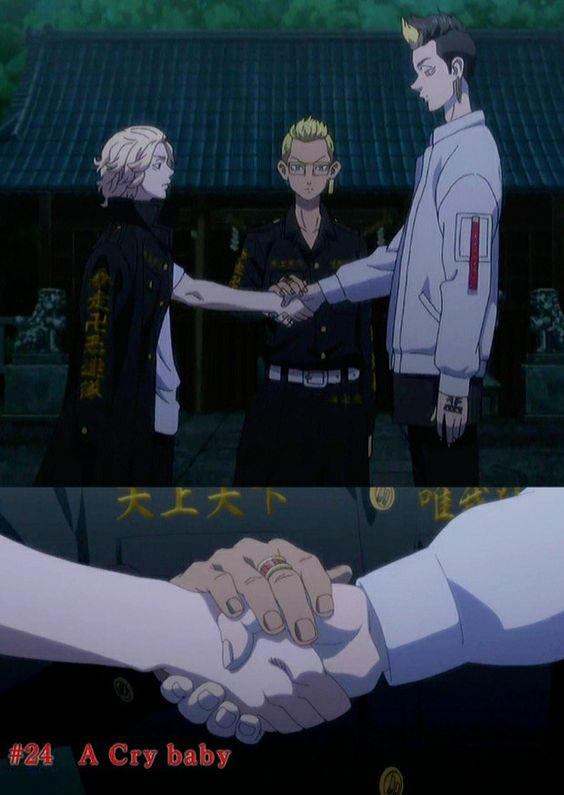

Ditulis oleh Eka guntara . Pada 04 November 2023
Tokyo revengers
Chapter 1
THanagaki Takemichi (Shin Yuuki) laki-laki berusia 26 tahun seorang pekerja paruh waktu. Suatu ketika, ia menonton berita di televisi.
Dari berita tersebut dikabarkan kalau seorang gadis bernama Tachibana Hinata (Waki Azumi) meninggal dalam sebuah konflik kelompok kriminal Tokyo Manjikai atau yang dikenal juga dengan Touman. Tachibana Hinata adalah satu-satunya pacar Takemichi ketika ia masih duduk di bangku SMP.
Keesokan harinya, ketika Takemichi sedang berdiri di peron kereta, ia didorong oleh seseorang hingga terjatuh. Diambang batas kematiannya, Takemichi mengalami sebuah kejadian time leap. Ia kembali ke 12 tahun yang lalu, tepatnya pada tahun 2005 ketika ia masih SMP.
Takemichi kembali ke masa SMP nya dan bertemu dengan teman-temannya kembali. Ia juga bergegas bertemu dengan Hina untuk memastikan kalau ia masih hidup. Kemudian ia secara tidak sengaja bertemu dengan Naoto (Ousaka Ryouta),.
Lalu, ia memberitahu kalau Hina di kemudian hari akan meninggal dan memintanya untuk selalu melindungi Hina agar ia tidak meninggal. Naoto menyetujui hal tersebut lalu mereka berjabat tangan dan tiba-tiba Takemichi kembali ke masa depannya di tahun 2017.
Takemichi bertemu kembali dengan Naoto, adik Hina yang kini sudah menjadi seorang polisi. Bersama dengan Naoto, Takemichi mulai menyelidiki kejadian tentang kematian Hina yang melibatkan kelompok Touman
Naoto mempredisiki kalau Takemichi kembali ke 12 tahun yang lalu itu pemicunya karena ia berjabat tangan dengan Naoto. Oleh sebab itu, demi mengubah masa depan yang kelam Takemichi dibantu dengan Naoto untuk menghentikan penyebabnya dimasa lalu.
Misi pertama untuk mencegah kematian Hina adalah ia harus bertemu dengan ketua geng Touman, Sano Manjiro yang dikenal juga dengan panggilan Mikey. Kembali ke tahun 2017, Takemichi dan Naoto menyelidiki kembali tentang perpecahan di kubu internal Touman. Salah satu penyebab utamanya adalah kematian Ryuguji Ken alias Draken pada tanggal 3 Agustus pada bentrokan dengan geng Mobius.
Misi keduanya Takemichi adalah menyelamatkan Draken. Kini Takemichi sudah berteman dengan Mikey dan juga Draken. Namun, bentrokan antara Touman dan Mobius tak bisa dihindari. Mobius yang dipimpin oleh Osanai (Takeuchi Eiji) tiba-tiba mendatangi Touman. Pada bentrokan tersebut Draken selamat, namun Pahchin tiba-tiba menusuk Osanai sehingga ia dipenjara. Kejadian ini menyebabkan internal Touman terbagi dua kubu antara Mikey dan Draken.
Namun pada tanggal 3 Agustus 2005 Draken ditusuk oleh salah satu member Touman saat terjadi bentrokan kembali dengan geng Mobius yang kini dipimpin oleh Shuji Hanma (Takuya Eguchi). Bentrokan kedua dengan Mobius dimenangkan oleh geng Touman dan Draken berhasil diselamatkan dari luka tusuknya dan mereka pun damai.
